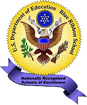

|
|
National Blue Ribbon Award
Schools

On May 22, 2000, U.S. Secretary of Education Richard W. Riley announced the selection
of 198 public and private elementary schools as the 1999-2000 Blue Ribbon Schools. "These
schools are fine examples of places where parents, teachers, administrators and the community
have formed partnerships to help all students learn to high standards," Riley said. "Their hard
work, dedication and commitment should serve as a model for other communities that are deeply
concerned about the education of America's students."
The list of new Blue Ribbon Schools include these 11 schools in the states served by
AEL's Regional Educational Laboratory.
Kentucky
Virginia
West Virginia
The U.S. Department of Education began the Elementary and Secondary School
Recognition Program in 1982 to identify and bring national attention to schools with innovative
programs that produce successful results. Each award-winning school receives a presidential
citation and a Flag of Excellence signifying the school's exemplary status. All winning
schools have demonstrated the professionalism of their teachers, commitment to their students,
and an exemplary record of progress. They serve as model programs for other schools. Schools
showing significant improvement despite serious obstacles or problems may also be recognized
for their accomplishments. Select below to view all Blue Ribbon Schools in AEL's region since
1982.
The elementary and secondary awards are presented in alternate years. (Middle schools
can compete in the secondary category provided they did not compete in the elementary category
the preceding year.) For futher information on applying to become a nationally recognized Blue
Ribbon School, contact your state's Blue Ribbon Schools Program Liaison (click on state above
then on
e-mail address of liaison) or the Blue Ribbon Schools
program. All nominations for recognition are made by state departments of education, the
Department of Defense Dependents Schools, the Bureau of Indian Affairs, or the Council for
American Private
Education.
AEL congratulates the faculties, staffs, and students of its Region's Blue Ribbon Schools
and is pleased to create a home page or provide a link to the home page of each.
|